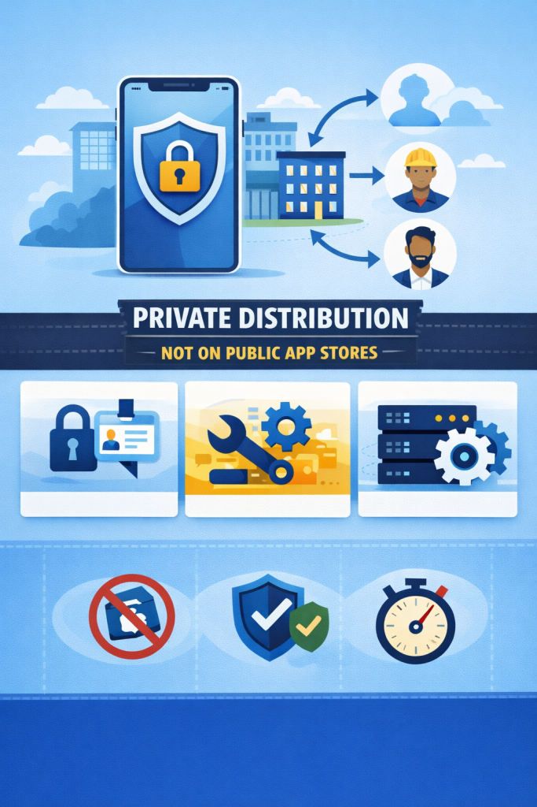
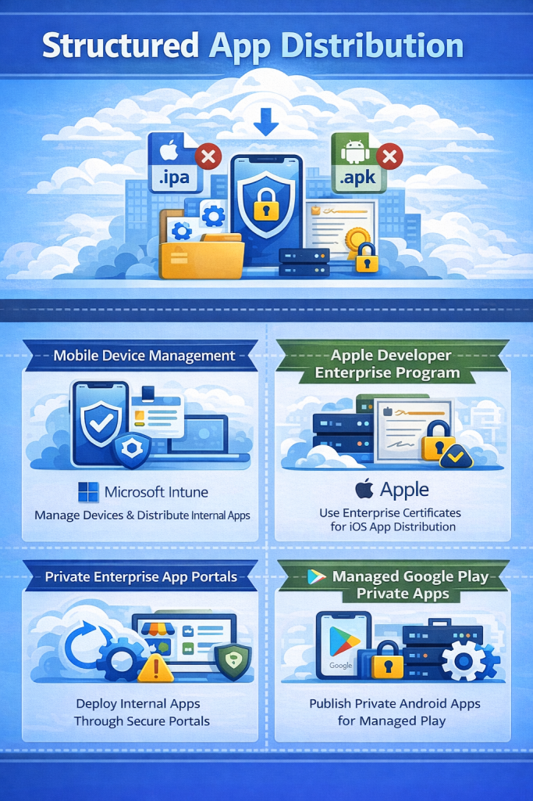
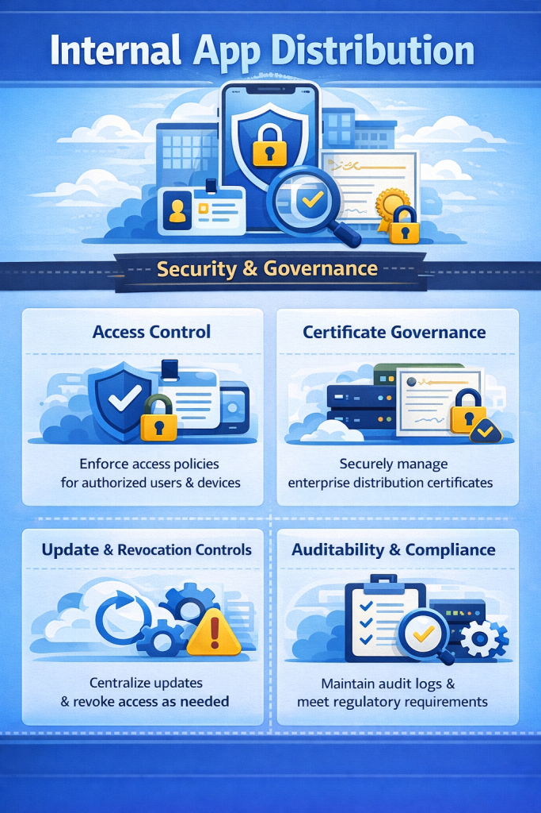

What Is In-House App Distribution?

In-house app distribution, also known as internal app distribution, describes how organizations deliver mobile applications to a defined group of users, such as employees, contractors, or business partners. These applications are not intended for public audiences and are not published to public app stores. Instead, they are distributed privately within an organization for operational or business purposes.
Unlike app distribution to testers, which focuses on short-term pre-release validation, in-house app distribution supports long-term internal use. Internal applications are typically installed, updated, and maintained over time as part of day-to-day business workflows.
Why In-House App Distribution Matters
Many organizations rely on mobile applications to support internal operations, including field work, sales, customer support, and internal tooling. In-house app distribution allows these applications to be delivered securely without exposing them to public marketplaces or external users.
By using internal distribution, teams can control who has access to an application, manage updates centrally, and reduce dependency on app store review cycles. This approach improves operational efficiency, supports compliance requirements, and enables faster iteration for internal tools that evolve alongside business needs.
Who Uses In-House Distribution?
In-house app distribution is used by organizations to deliver internal applications to specific groups based on business needs and access requirements. The intended audience depends on the purpose of the application. Common users of in-house distribution include:
- IT and enterprise mobility teams, who manage device enrollment, application access, updates, and lifecycle policies across the organization.
- Sales and customer support teams, who rely on internal mobile apps for customer data access, field operations, and day-to-day workflows.
- Partners and contractors, who require limited or temporary access to internal applications without exposing them to public distribution channels.
- Security and compliance teams, who oversee access control, auditability, and regulatory requirements related to internal application usage.
Common Methods for In-House App Distribution

Directly installing an .ipa or .apk file, which are distribution-ready builds for iOS and Android, is not always practical or permitted for internal use. Platform policies, access control requirements, and device restrictions often make raw file installation unsuitable at scale. In addition, internal applications typically require ongoing version management, meaning users must be able to receive updates when new versions become available.
For these reasons, organizations rely on structured distribution methods that support controlled access, update management, and governance. Common approaches include:
- Mobile Device Management (MDM) solutions, which allow organizations to centrally manage devices, enforce policies, and distribute internal applications. Tools such as Microsoft Intune are commonly used for this purpose.
- Apple Developer Enterprise Program, which enables organizations to distribute iOS applications internally using enterprise certificates, without requiring individual device registration. This method is intended strictly for internal employee use and must comply with Apple’s enterprise distribution policies.
- Private enterprise app portals, which provide authenticated access to internal applications through a centralized portal. These portals often include version visibility, access control, and audit logging.
- Android managed Google Play private apps, which allow organizations to publish private Android applications that are only visible to selected users or groups within an organization through managed Google Play.
In-House App Distribution Flow
While the exact implementation may vary, in-house app distribution generally follows a consistent sequence focused on security, control, and ongoing maintenance:
- Build an internal binary, a distribution-ready build is created specifically for internal use, typically as an .ipa file for iOS or an .apk or .aab file for Android.
- Sign the application for internal distribution, the application is signed using an enterprise certificate (for iOS apps) so it can be installed on authorized devices within the organization.
- Distribute the application internally, the signed binary is made available through restricted internal channels such as MDM systems, enterprise app portals, or managed private app stores.
- Authenticate and control installation, access to the application is limited to approved users or devices using authentication mechanisms such as device enrollment, user identity verification, or enterprise access policies.
- Manage updates and access, updates are delivered centrally as new versions become available, and access is continuously managed to account for role changes, device replacement, or employee offboarding.
Security, Compliance, and Governance

In-house app distribution requires stronger security and governance controls than public app releases or short-term tester distribution. Internal applications often support business-critical workflows and may access sensitive systems or data, making access control and lifecycle management essential. Key considerations include:
- Access control, organizations should enforce access control policies to ensure that only authorized users and devices can install and use internal applications. This may include user authentication, role-based access rules, and device enrollment requirements.
- Certificate governance, enterprise distribution certificates must be carefully managed throughout their lifecycle. Certificates should be securely stored, renewed on time, and protected against misuse to prevent unexpected app revocation or violations of platform policies.
- Update and revocation controls, organizations must be able to push updates, enforce minimum application versions, and revoke access promptly when users change roles or leave the organization.
- Auditability and compliance, maintaining audit logs for application access and distribution activity helps organizations meet regulatory requirements and maintain visibility into how internal applications are deployed and used.
Common Mistakes of In-House App Distribution
Organizations often encounter avoidable issues when distributing internal applications at scale. Common mistakes include:
- Provisioning and signing misconfigurations, such as relying on ad-hoc profiles with device limits or misusing enterprise certificates, which can lead to installation failures or certificate revocation.
- Manual update processes, where users must repeatedly download full application packages, delaying adoption of critical fixes.
- Exposed installation endpoints, including unsecured manifests or download links that allow unauthorized access to internal applications.
- Weak access and revocation controls, leaving former employees, contractors, or lost devices with continued access to internal apps.
- Lack of lifecycle planning, treating internal applications like temporary test builds instead of long-term operational tools.
- Missing auditability and governance, resulting in limited visibility into who distributed builds, who has access, and when changes occurred.
Managed In-House Distribution Platforms
As internal application portfolios grow in size and scope, some organizations adopt managed in-house distribution platforms to reduce manual processes and improve operational consistency. These platforms can help centralize internal app delivery, enforce access controls, manage application updates, and maintain audit logs across teams and devices. Solutions such as Appcircle are sometimes used in these scenarios to support in-house distribution as part of a broader internal mobile delivery workflow.